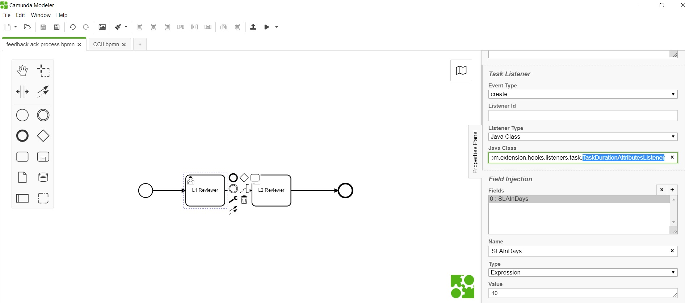

<article class="docs-article">
    <section class="docs-section" id="listeners">
        <div>
            <h2 id="form-duration-attributes-listener">Form Duration Attributes Listener</h2>
            <hr>
            <p><strong>org.camunda.bpm.extension.hooks.listeners.task.TaskDurationAttributesListener</strong>
            </p>
            <p>This component can be used on <strong>CREATE</strong> event of task listener. This
                calculates and set
                DUE DATE in business days only.</p>
            <h3 id="table-of-content">Table of Content</h3>
            <ul>
                <li><a href="#type">Type</a></li>
                <li><a href="#how-it-works">How it Works</a></li>
                <li><a href="#how-to-use">How to Use</a></li>
            </ul>
            <h3 id="type">Type</h3>
            <p>Task Listener</p>
            <h3 id="how-it-works">How it Works</h3>
            <ul>
                <li>This takes in a mandatory expression field <strong>SLAInDays</strong>. It
                    calculate due date by
                    adding SLAInDays value with task creation date.
                    Please note; this also creates a CAM variable <strong>task_due_date</strong>
                    with the calculated
                    value.</li>
            </ul>
            <h3 id="how-to-use">How to Use</h3>
            <p>Below snapshot shows how to configure the
                <strong>TaskDurationAttributesListener</strong> to a task.
            </p><br><br>
            <p><br><br>
                Click here <a href="Timeout Notification Listener.html">Timeout Notification
                    Listener</a></p>

        </div>
        </section>
        </article>